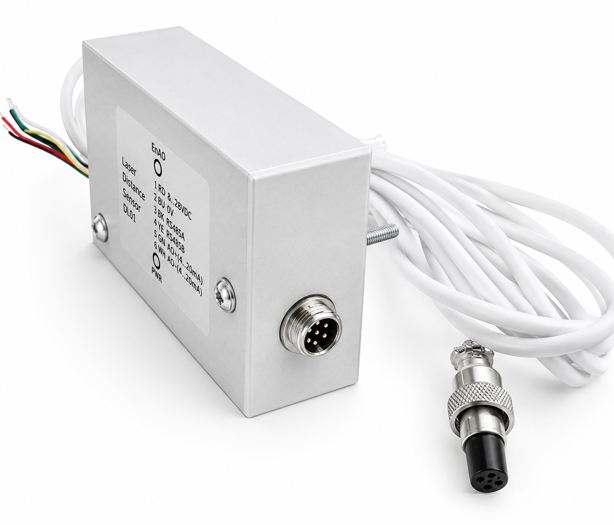

Industrial Laser Distance Sensor (RS485/4-20mA)
Industrial laser distance sensor with a protected aluminum enclosure, simultaneous RS485 Modbus RTU and active 4–20 mA interfaces. Suitable for industrial automation, process control, level monitoring, agriculture, and many other real-world applications.
Features
- Simultaneous RS485 Modbus RTU and active 4–20 mA outputs
- Configurable for level monitoring, empty/full tank detection, and alarm applications
- Adjustable alarm thresholds and hysteresis
- Two-point distance calibration
- Analog output calibration
- Adjustable measurement scaling
- Configurable digital filtering
- TF-Luna ToF laser module
- EEPROM parameter storage
- User-upgradable firmware via RS-485
Specifications
- Measurement range: 0.2–8 m*
- Resolution: 1 mm
- Update rate: 1–100 Hz (configurable via Modbus registers)
- Supply voltage: 8–28 VDC
- Power consumption: ≤ 3 W
The sensor is currently operating on a concrete block production line for automatic concrete mixture dosing.
Videos
Automatic Dosing (Close View)
https://youtube.com/shorts/zwSHPJO99uA
Automatic Dosing (Front View)
https://youtube.com/shorts/gGjYULFCIdY
Operator HMI Display
Measurements from both laser sensors (K1 and K2)
More Information
Hackaday Project:
https://hackaday.io/project/206284-custom-industrial-laser-distance-sensor
The sensor is available for purchase on SmallRun.
License
Free for personal use and hobby projects.
Credit is appreciated — tag @S2Lshop if you build something with these files!